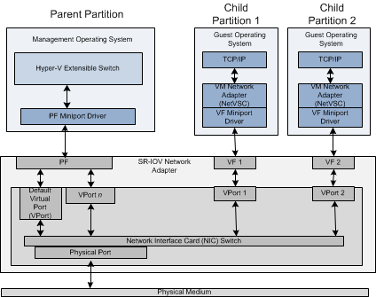
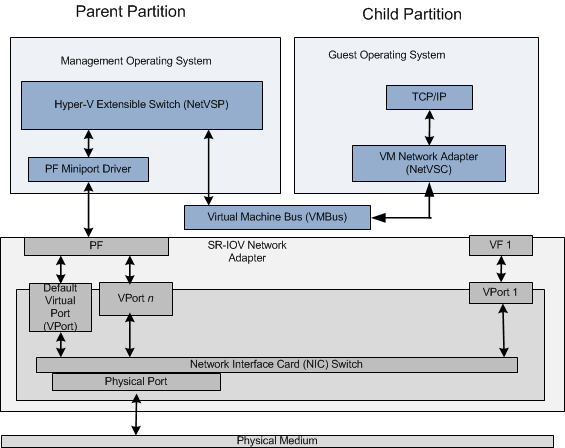
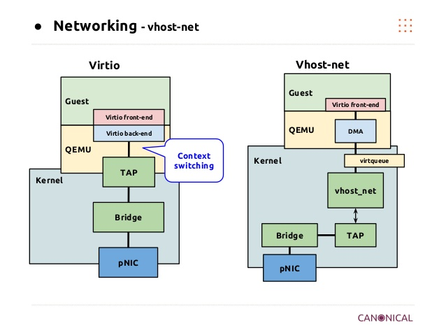
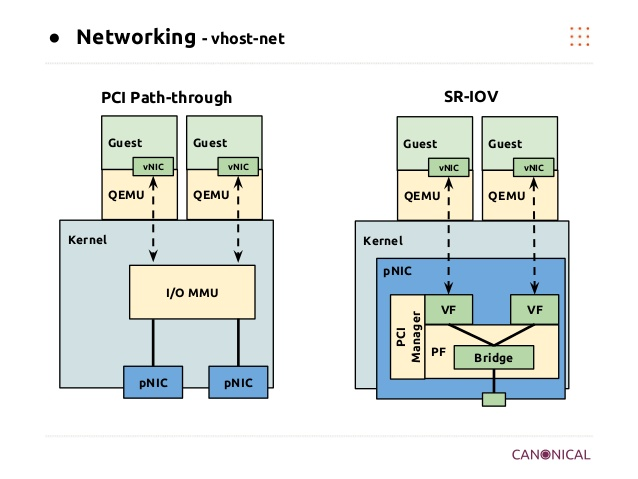
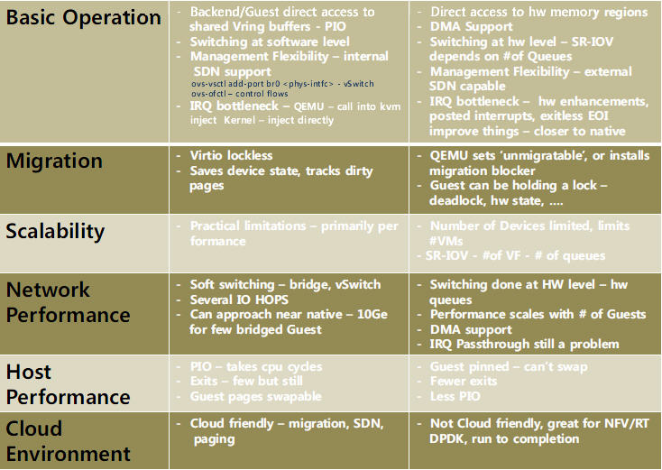
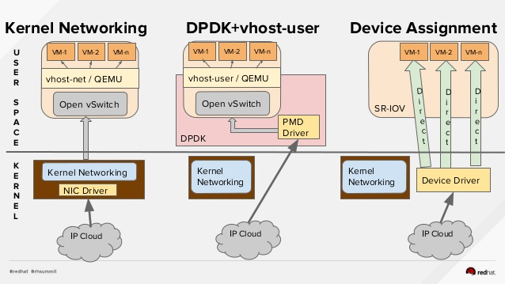
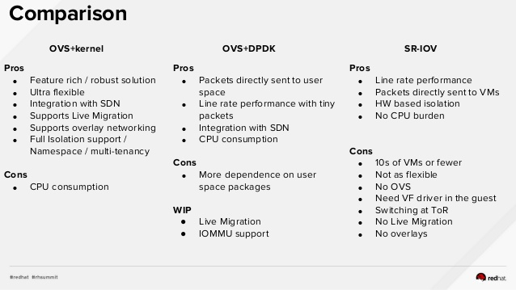
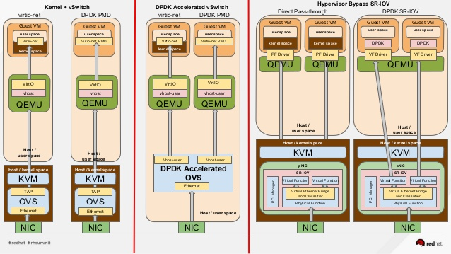

SR-IOV
SR-IOV（Single Root I/O Virtualization）是一个将PCIe共享给虚拟机的标准，通过为虚拟机提供独立的内存空间、中断、DMA流，来绕过VMM实现数据访问。SR-IOV基于两种PCIe functions：
PF(Physical Function)： 包含完整的PCIe功能，包括SR-IOV的扩张能力，该功能用于SR-IOV的配置和管理。FV(Virtual Function)： 包含轻量级的PCIe功能。每一个VF有它自己独享的PCI配置区域，并且可能与其他VF共享着同一个物理资源
 
SR-IOV要求
CPU必须支持IOMMU（比如英特尔的VT-d或者AMD的AMD-Vi，Power8处理器默认支持IOMMU）- 固件
Firmware必须支持IOMMU CPU根桥必须支持ACS或者ACS等价特性PCIe设备必须支持ACS或者ACS等价特性- 建议根桥和
PCIe设备中间的所有PCIe交换设备都支持ACS，如果某个PCIe交换设备不支持ACS，其后的所有PCIe设备只能共享某个IOMMU组，所以只能分配给1台虚机。
SR-IOV vs PCI path-through
架构上的比较（以网卡为例）


Virtio 和 Pass-Through 的详细比较

图片来源slideshare - Kvm performance optimization for ubuntu、KVM 介绍（4）：I/O 设备直接分配和 SR-IOV [KVM PCI/PCIe Pass-Through SR-IOV]
SR-IOV vs DPDK



SR-IOV使用示例
开启VF：
modprobe -r igb
modprobe igb max_vfs=7
echo "options igb max_vfs=7" >>/etc/modprobe.d/igb.conf
查找Virtual Function：
# lspci | grep 82576
0b:00.0 Ethernet controller: Intel Corporation 82576 Gigabit Network Connection (rev 01)
0b:00.1 Ethernet controller: Intel Corporation 82576 Gigabit Network Connection(rev 01)
0b:10.0 Ethernet controller: Intel Corporation 82576 Virtual Function (rev 01)
0b:10.1 Ethernet controller: Intel Corporation 82576 Virtual Function (rev 01)
0b:10.2 Ethernet controller: Intel Corporation 82576 Virtual Function (rev 01)
0b:10.3 Ethernet controller: Intel Corporation 82576 Virtual Function (rev 01)
0b:10.4 Ethernet controller: Intel Corporation 82576 Virtual Function (rev 01)
0b:10.5 Ethernet controller: Intel Corporation 82576 Virtual Function (rev 01)
0b:10.6 Ethernet controller: Intel Corporation 82576 Virtual Function (rev 01)
0b:10.7 Ethernet controller: Intel Corporation 82576 Virtual Function (rev 01)
0b:11.0 Ethernet controller: Intel Corporation 82576 Virtual Function (rev 01)
0b:11.1 Ethernet controller: Intel Corporation 82576 Virtual Function (rev 01)
0b:11.2 Ethernet controller: Intel Corporation 82576 Virtual Function (rev 01)
0b:11.3 Ethernet controller: Intel Corporation 82576 Virtual Function (rev 01)
0b:11.4 Ethernet controller: Intel Corporation 82576 Virtual Function (rev 01)
0b:11.5 Ethernet controller: Intel Corporation 82576 Virtual Function (rev 01)
# virsh nodedev-list | grep 0b
pci_0000_0b_00_0
pci_0000_0b_00_1
pci_0000_0b_10_0
pci_0000_0b_10_1
pci_0000_0b_10_2
pci_0000_0b_10_3
pci_0000_0b_10_4
pci_0000_0b_10_5
pci_0000_0b_10_6
pci_0000_0b_11_7
pci_0000_0b_11_1
pci_0000_0b_11_2
pci_0000_0b_11_3
pci_0000_0b_11_4
pci_0000_0b_11_5
$ virsh nodedev-dumpxml pci_0000_0b_00_0
<device>
<name>pci_0000_0b_00_0</name>
<parent>pci_0000_00_01_0</parent>
<driver>
<name>igb</name>
</driver>
<capability type='pci'>
<domain>0</domain>
<bus>11</bus>
<slot>0</slot>
<function>0</function>
<product id='0x10c9'>82576 Gigabit Network Connection</product>
<vendor id='0x8086'>Intel Corporation</vendor>
</capability>
</device>
通过libvirt绑定到虚拟机
$ cat >/tmp/interface.xml <<EOF
<interface type='hostdev' managed='yes'>
<source>
<address type='pci' domain='0' bus='11' slot='16' function='0'/>
</source>
</interface>
EOF
$ virsh attach-device MyGuest /tmp/interface. xml --live --config
当然也可以给网卡配置MAC地址和VLAN：
<interface type='hostdev' managed='yes'>
<source>
<address type='pci' domain='0' bus='11' slot='16' function='0'/>
</source>
<mac address='52:54:00:6d:90:02'>
<vlan>
<tag id='42'/>
</vlan>
<virtualport type='802.1Qbh'>
<parameters profileid='finance'/>
</virtualport>
</interface>
通过Qemu绑定到虚拟机
/usr/bin/qemu-kvm -name vdisk -enable-kvm -m 512 -smp 2 \
-hda /mnt/nfs/vdisk.img \
-monitor stdio \
-vnc 0.0.0.0:0 \
-device pci-assign,host=0b:00.0
优缺点
Pros:
- More Scalable than Direct Assign
- Security through IOMMU and function isolation
- Control Plane separation through PF/VF notion
- High packet rate, Low CPU, Low latency thanks to Direct Pass through
Cons:
- Rigid: Composability issues
- Control plane is pass through, puts pressure on Hardware resources
- Parts of the PCIe config space are direct map from Hardware
- Limited scalability (16 bit)
- SR-IOV NIC forces switching features into the HW
- All the Switching Features in the Hardware or nothing